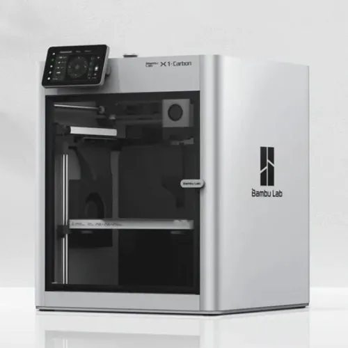
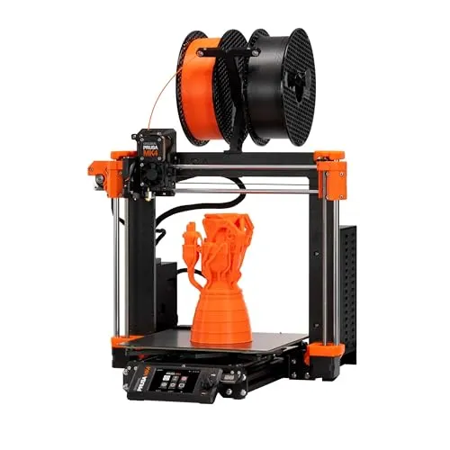
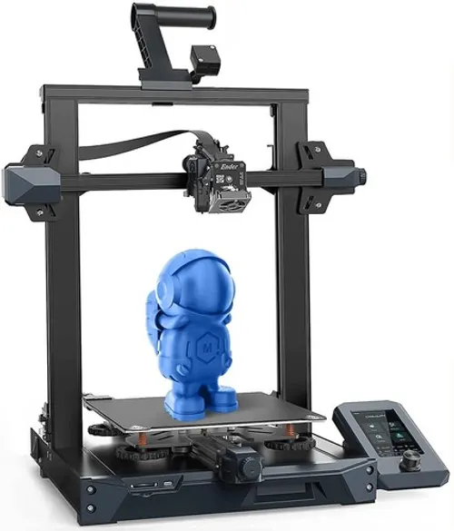
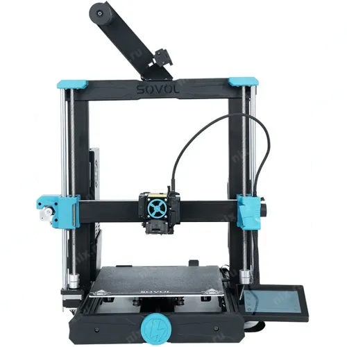
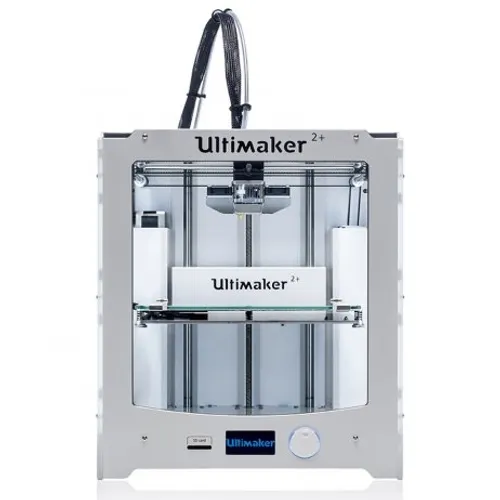

    
Закрытый FDM-принтер с кинематикой CoreXY, объёмом печати 256 × 256 × 256 мм и скоростью печати до 500 мм/с. Подробнее — на отдельной странице.
Принтер поддерживает многоцветную печать с помощью системы AMS, имеет закалённое сопло и лидар для проверки первого слоя.
Модель от Prusa Research с экструдером Nextruder, датчиком нагрузки для калибровки стола и объёмом печати 250 × 210 × 220 мм.
Принтер известен надёжностью, открытой документацией и большим сообществом пользователей.
Полный список моделей смотрите на странице с таблицей.